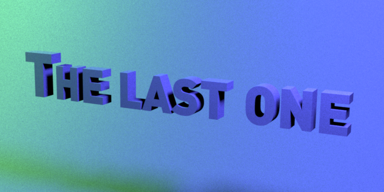
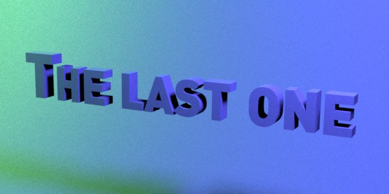
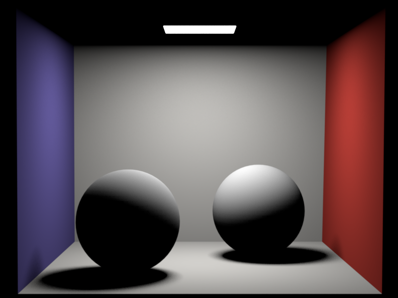
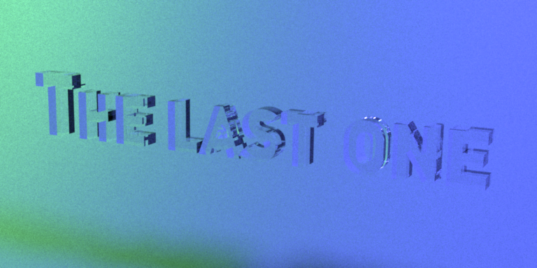
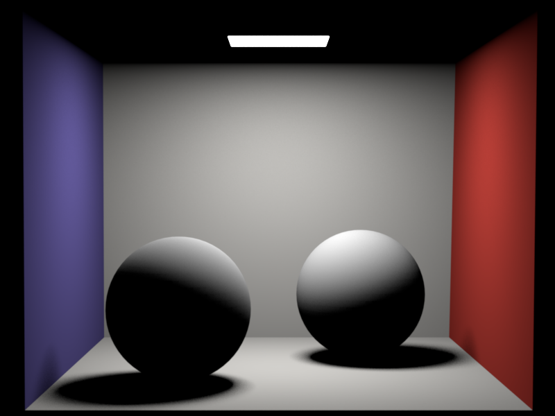
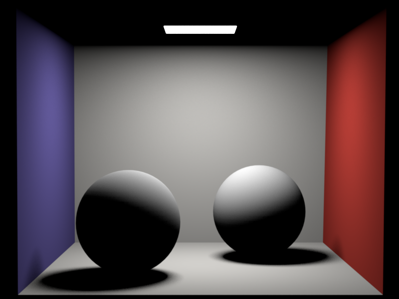

**Homework 4**
Student name: Buisson Nicolas
Sciper number: 285607
Area lights (25 pts)
====================
When considering mesh emitters, I added a condition during the activation process which will instantiate a discrete pdf object within the mesh if it is an area light emitter. Doing so, we initialize and add all the relevant properties to the discrete pdf instance (adding every triangle composing the mesh with their respective weight, ie surface area). We then call the normalize method of the dpdf object.
I also added a sample position method in the mesh class which will randomly and uniformly (with respect to area) sample a point on the surface of the mesh (we first sample a triangle using the discrete pdf object and then sample a point on this triangle). Note that it is important to call the reuse sample method of the discrete pdf object, in order to only use 2 initial random samples and not 3.
Then comes the emitter class and the area light class. For the emitter class, I just added an emitted radiance method which, provided a direction in the local space, will return the emitted radiance of the light in this direction. This method is overwritten in the area light to return the emitted radiance of the light. Using the mesh, we will have access to the sample position class and the area light methods, so everything is implemented (for area lights, as adding other types of lights would require some changes, but for now I focused on this kind of light).
Distribution Ray Tracing (40 pts)
=================================
For ray tracing, we have to compute the incident radiance on the considered pixel. First, we do an intersection query. If the intersected mesh is an emitter, we add its corresponding emitted radiance to the incident radiance. If the mesh has a diffuse BSDF, we have to query another ray. To do so, we first randomly select a light, according to its surface area (this is precomputation, we use the discrete pdf class for that). Once the light is choosen, we have to sample a point on its surface (using what was previously implemented).
Then we can compute the reflected radiance using the BSDF function of the mesh, the emitted radiance of the light and the geometric term (without forgetting to include the pdf of the considered sample on the light's surface to follow the monte carlo method, as well as the pdf of the light itself, if we had to choose between different lights). We then add all of this to the incident radiance.
Note: in order to query the Li mothod of the whitted integrator, we must first call the preprocess function of the integrator. When going through the statistical tests, I realized that it never calls this preprocess function, and thus added a line of code in the src/ttest.cpp file, line 158: scene->getIntegrator()->preprocess(scene);
Diffuse motto: in this image, we can see a very small variation in the noise, which is most likely due to the way we query and use the random numbers (since there are 2 lights with different colors, it's easier to see a very small variation).


Cornell box (distributed): in this image, there's almost no difference (as there's only one small area light, there's not a lot of possible variance when we randomly sample the points).

Dielectrics (25 pts)
====================
When creating the dielectric sample method, we just follow the fresnel and snell equations. The reflected and refracted fresnel terms give us the probability to reflect or refract the ray (we choose one or the other). We make sure that cos theta is positive when computing the refracted direction, and if not we invert n1 and n2 in order to be in the classic case. We finally set the bsdf query structure's outgoing local direction (ie wo) to the desiredreflection or refraction.
Note that the critical total reflection case is already taken into account in the fresnel equations, ie when there's total reflection, we will have p(reflected)=1 and p(refracted)=0. We use the provided fresnel method implemented in the src/common.cpp file.
Whitted-style ray tracing (10 pts)
==================================
Here we just build around the distribution ray tracer: if the surface is specular (thus not diffuse), we sample a new ray using the BSDF's specular sample method and return the incident radiance as viewed from this new point in this new direction. To avoid critical cases where the ray never stops reflecting, we add a probility of 5% that we actually stop here and not cast a new ray.
Note that the returned incident radiance will be equal to 1/0.95 * Li(new ray) in order to account for the 5% probability that we stop querying rays.
Dielectric motto: same as the diffuse case, but we can also see a small variation in the refractions on the 'O' of the motto (again, there's a random factor to take into account here).

Cornell box (Whitted): most likely identical images in this case.
 
